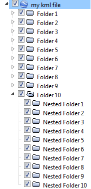

kml.createFolder
Create a folder inside the current kml file
Contents
Syntax
k = kml('kml title here');
folder = k.createFolder('folder title here')
--- any plot code here, using e.g. folder.plot(...)
k.run;Description
folder = kml.createFolder('title') creates a folder inside the current kml object. It is also possible to create nested folders, by using the same method in the folder object.
To plot inside a folder, simple use any available functions from the kml toolbox, as in:
folder.plot(...), folder.scatter(...), folder.model(...), etc...
Example
% Create a new kml object k = kml('my kml file'); % Create some folders in the kml file for i = 1:10 mainFolder = k.createFolder(sprintf('Folder %i', i)); for j = 1:10 nestedFolder = mainFolder.createFolder(sprintf('Nested Folder %i', j)); end end % Save the kml and open it in Google Earth k.run;
This example creates a nested folder structure like this:

This file is part of the kml toolbox. Copyright 2012 Rafael Fernandes de Oliveira (rafael@rafael.aero)